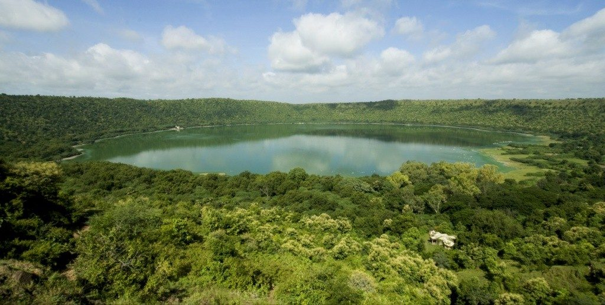
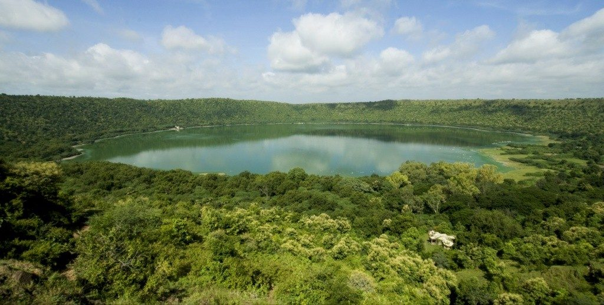
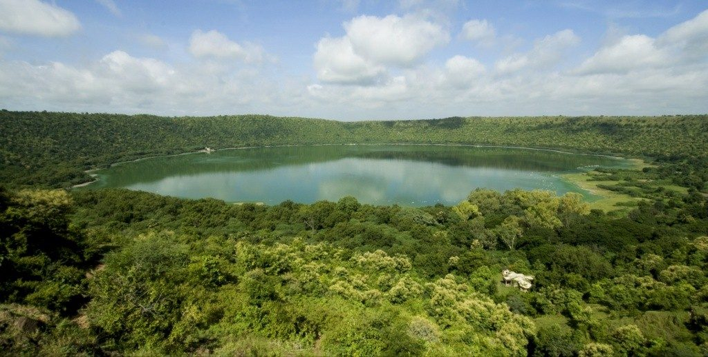

Lonar - 202203103510288
SCROLL DOWN TO
VIEW DETAILS
VIEW DETAILS
The Lonar Wildlife Sanctuary is situated around a lagoon called Lonar Lake, which was created by a meteorite impact about 50,000 years ago.


The Lona Wildlife Sanctuary is situated around a lagoon called Lonar Lake, which was created by a meteorite impact about 50,000 years ago.The diameter of the Lonar lake is 1.83 km.This sanctuary located in Lonar taluka of Buldhana district of Maharashtra. The sanctuary is spread over an area of 365.16 square km. It includes the 77.69 Ha Lonar lake. The forest around the lake is mainly Southern Tropical dry Deciduous Forest.In 2020 the Lonar lake was declared as Ramsar site.The foul smell of hydrogen sulfide gas is common near the lake water.
The nearest rail head is Jalna Town of Maharashtra state which is 84 km from the sanctuary. Regular buses are available from Partur and Jalna Bus Stand. The sanctuary is open for visitors from sunrise to sunset. There are many hotels and resorts located near Lonar town.
The Lonar sanctuary is a part of Aurangabad Wildlife Division. The sanctuary is managed by Mehkar Forest Range. The sanctuary was notified by Govt. of Maharashtra on 8 June 2000.
The trees growing in the sanctuary are Acacia nilotica (Babhul), Ficus glomerata (Umbar), Terminalia arjuna (Arjun), Tendu, Syzygium cumini (Jamun), Ficus benghalensis (Vad), Dolichandrone falcata (Medshing).There are 14 types of algae reported from the lake which mostly include blue-green Algae.
The migratory birds flock to the lake from October to March every year. The common animals found in the sanctuary are Sloth bear, Neelgai, Wolf, Chital and Barking Deer. There are 12 species of mammals, 160 species of birds, 46 species of reptiles are found in the sanctuary.
The major tourist place is Lonar Lake. There are about 1250 ancient temples around the Lonar Lake.In July 2020 the colour of the Lake turned pink which was due to Haloarchaea bacteria culture that creates pink pigment and exists in saline water.
The sewage from the nearby town is main threat.The other threats include forest fires, encroachment, hunting and trespassing. The littering of the lake by the pilgrims is a major threat to the ecosystem.The continued flow of contaminations in the water of lake is causing eutrophication.